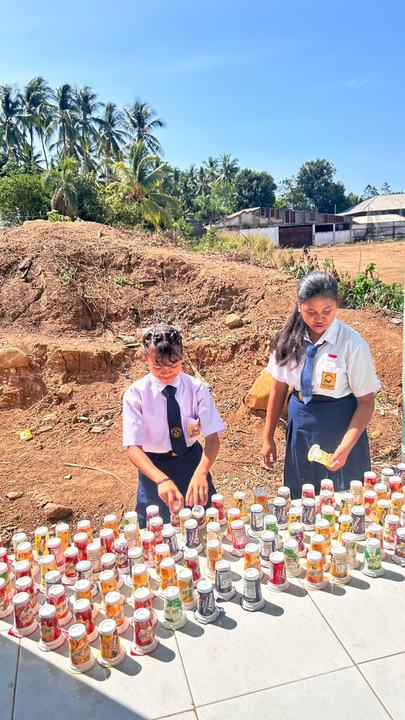
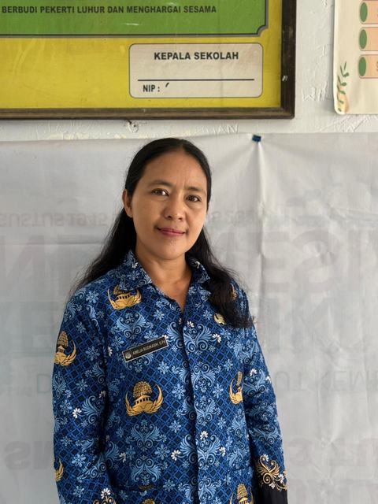

Dokumentasi & Tim Pembuat Karya Ini
Tahapan Pengerjaan Siswa
Klik foto untuk melihat proses
Expo Kegiatan Kokurikuler • SMP Negeri 3 Tutuyan
Sampah Berkah Untuk Bumi
Menampilkan 19 karya kreatif daur ulang dan 47 dokumentasi proses kolaborasi siswa untuk bumi yang lebih lestari.
SMP Negeri 3 Tutuyan
Kab. Bolaang Mongondow Timur
Sampah Berkah Untuk Bumi
Pendidikan Expo Kabupaten Bolaang Mongondow Timur 2026
Dari kepedulian kecil untuk bumi, lahirlah 19 karya daur ulang siswa SMP Negeri 3 Tutuyan. Setiap botol, tutup plastik, sendok bekas, kardus, kaleng, dan batok kelapa diberi kehidupan baru yang indah dan berdaya guna—mewujudkan tema “Guru Berinovasi, Murid Berkarya, Sekolah Bertransformasi”.
19
Karya Daur Ulang
47
Dokumentasi Nyata
3R
Reduce • Reuse • Recycle
Program kokurikuler SABUMI (Sampah Berkah Untuk Bumi) mengajak siswa SMP Negeri 3 Tutuyan mengolah limbah di sekitar kita menjadi karya nyata yang ramah lingkungan, fungsional, dan membanggakan.
Mengurangi timbulan sampah sekolah melalui prinsip Reduce, Reuse, Recycle pada plastik, kardus, kaleng susu, dan tempurung kelapa.
Mengasah kepekaan desain sehingga limbah sehari-hari berubah menjadi lampu hias, jam dinding, kalender, vas bunga, kotak tisu, hingga rak tiga susun.
Dikerjakan bersama dalam tim antarsiswa sebagai cerminan budaya belajar kolaboratif yang selaras dengan Pendidikan Bermutu untuk Semua.
Pilih jenis bahan bekas di bawah ini untuk melihat proses pengolahan dan karya nyata siswa.

Tahap ProsesCuci • Ukir • Rangkai
Botol dan gelas minuman bekas dicuci, dijemur, dipotong membentuk kelopak bunga, lalu diberi lampu LED hangat dan warna cerah.
Galeri bergeser otomatis ke samping — seret langsung dengan mouse/jari untuk mempercepat, pilih kecepatan, atau klik karya untuk memberi apresiasi.
Tidak ada karya yang cocok dengan pencarianmu.
Rangkaian proses pembuatan karya siswa dari tahap aksi bersih lingkungan hingga jadi—termasuk 10 tahap kronologis Jam Dinding SABUMI dan aksi gotong royong kelas. Geser manual atau klik foto untuk melihat detail.

Expo Kokurikuler SABUMI (Sampah Berkah Untuk Bumi) menjadi wujud nyata komitmen SMP Negeri 3 Tutuyan dalam menumbuhkan karakter peduli lingkungan sekaligus kreativitas peserta didik. Dari bahan sederhana yang kerap dianggap limbah, para siswa berhasil menciptakan 19 karya yang indah dan bermanfaat.
Mari bersama menjaga semangat Kreatif, Peduli Lingkungan, dan Berdaya Guna demi mendukung Pendidikan Bermutu untuk Semua dalam bingkai tema resmi Pendidikan Expo Boltim 2026: “Guru Berinovasi, Murid Berkarya, Sekolah Bertransformasi”.
Tanamkan komitmen nyata Anda untuk kelestarian bumi dan berikan apresiasi bagi karya inovasi siswa SMPN 3 Tutuyan. Setiap suara dan janji Anda akan bersemi menjadi helai daun di Pohon Komitmen SABUMI.
Pilih aksi nyata peduli bumi Anda dan tuliskan apresiasi untuk stand kami
0 helai daun komitmen tertanam mekar di dahan
Harmoni Alam & Kearifan Lokal
Dokumentasi & Tim Pembuat Karya Ini
Pendidikan Expo Kabupaten Bolaang Mongondow Timur Tahun 2026 • Stand Jenjang SMP/MTs (SMPN 3 Tutuyan)
• Mengurangi timbulan sampah anorganik sekolah melalui aksi nyata prinsip 3R (Reduce, Reuse, Recycle).
• Mengembangkan Profil Pelajar Pancasila: Gotong Royong, Bernalar Kritis, dan Kreatif pada murid jenjang SMP.
• Menghasilkan 19 produk daur ulang yang berestetika tinggi dan fungsional untuk sarana kelas maupun rumah tangga.
1. Memahami: Siswa bersama guru melakukan aksi observasi sampah di halaman dan kebun sekolah, memetakan jenis bahan limbah, serta merancang sketsa karya dalam tim kelompok.
2. Mengaplikasi: Melakukan pencucian higienis dengan air sabun, penjemuran di bawah sinar matahari, pengukuran dan pembuatan pola, pemotongan simetris, pengecatan ramah lingkungan, dan perakitan presisi (seperti 10 tahap pengerjaan Jam Dinding SABUMI dan Toples Kaleng).
3. Merefleksi: Siswa menguji kekuatan dan fungsi guna karya, mempresentasikan hasil kerja di depan teman sebaya, serta mendokumentasikan refleksi proses ke dalam portofolio digital.
• 47 foto kronologis aksi pengerjaan nyata siswa (terverifikasi di galeri dokumentasi web).
• Fisik 19 karya yang dipajang dan dapat dicoba/disentuh langsung di stand pameran.
• Reduksi timbulan sampah anorganik di SMPN 3 Tutuyan tercatat signifikan selama masa aksi kokurikuler.
• Portofolio digital interaktif dengan QR Code akrilik di meja stand.
• Bagi Murid: Tumbuhnya student agency (suara, pilihan, kepemilikan), peningkatan rasa percaya diri dalam berbicara dan presentasi, serta perubahan perilaku tidak membuang sampah sembarangan.
• Bagi Sekolah: Lingkungan sekolah menjadi lebih asri dan indah, kelas memiliki dekorasi edukatif hasil karya mandiri, serta terbangun budaya kolaborasi antarsiswa dan guru.
• Keberhasilan: 100% siswa berpartisipasi dengan antusias tanpa rasa malu memegang bahan daur ulang.
• Tantangan: Keterbatasan peralatan perekat lem panas sehingga siswa harus bergantian secara tertib.
• Rencana Perbaikan: Merintis Bank Sampah Unit SMPN 3 Tutuyan dan memperluas integrasi karya ke dalam mata pelajaran Seni Budaya dan Prakarya.
Alur cepat memandu kunjungan tim penilai juri expo di Stand SMPN 3 Tutuyan
Siap Memulai (Menit 1)
“Selamat pagi / siang Bapak/Ibu Dewan Juri! Selamat datang di Stand SMP Negeri 3 Tutuyan. Inovasi yang kami usung bernama SABUMI (Sampah Berkah Untuk Bumi). Program ini berawal dari kepedulian kami melihat limbah botol, gelas plastik, dan kardus di sekitar lingkungan sekolah dan pantai Tutuyan. Melalui SABUMI, kami membuktikan bahwa sampah bukan masalah yang harus dibakar, melainkan berkah yang dapat diolah menjadi 19 karya bernilai guna tinggi.”
“Dalam pembuatannya, kami para murid terlibat langsung 100% dengan alur Memahami, Mengaplikasi, dan Merefleksi—mulai dari aksi memungut sampah, mencuci bersih dengan sabun, menjemur, memotong, hingga merangkai. Ini salah satu karya ikonik kami: Jam Dinding SABUMI 3R dengan angka dari tutup botol, serta lampu hias sendok dan toples kaleng susu formula. Bapak/Ibu Juri juga dapat mencoba simulasi interaktif transformasi sampah di layar tablet kami!”
“Dampak nyatanya, lingkungan sekolah kami kini bersih, dan kami memiliki kepercayaan diri serta keterampilan baru. Karena program ini ramah anggaran, praktik baik ini sangat siap direplikasi oleh sekolah-sekolah lain di Boltim melalui forum KOMBEL. Seluruh 47 dokumentasi kronologis dan video demo dapat diakses dengan memindai QR Code di meja stand kami. Terima kasih, Salam SABUMI!”
Asal Sekolah / Desa
“Pesan refleksi pengunjung...”